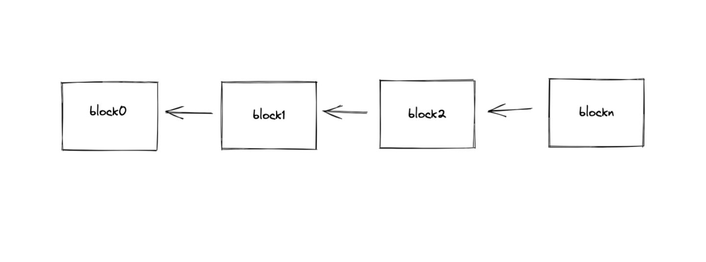
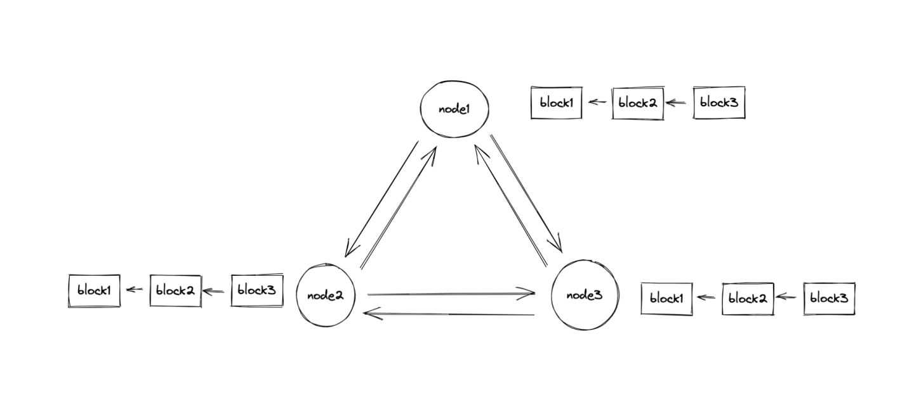
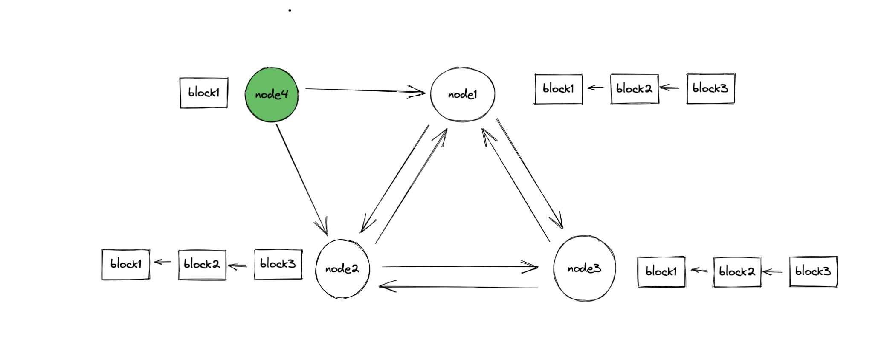
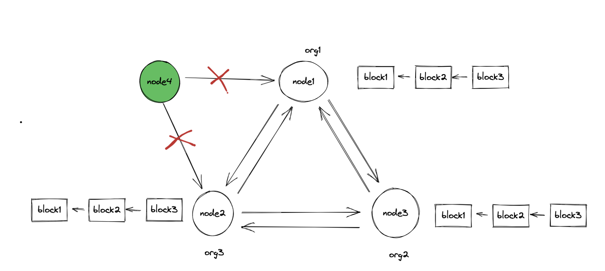

区块链是什么
区块链是什么？很多人为之迷惑，因为从来没有一个技术的争议性有这么大，集财富、骗局、新科技等等话题于一身。
但是实际上，这是一种过度包装。之前看到过一个段子，用来形容这个情况再适合不过了：”他们说区块链不会骗人，但是他们会拿区块链骗人“。很多人也是因为不懂区块链所以被骗的。但区块链其实根本就不复杂，无论是从技术上还是概念上。
这篇文章会从科普的角度来说一下区块链运作的细节。主要以比特币网络为主，后面也会聊一下联盟链的一些情况。区块链中的新名词比较多，我会尽可能的说的通俗易懂一点。
1. 区块链是什么
区块链脱胎于比特币，用来存储比特币中产生的交易数据，区块链有两个特点：
- 数据写入到区块之后就很难（注意这里，是很难，不是不能）被篡改，通常被称之为不可篡改
- 去中心化，没有人可以真正掌控整个系统
1.1 区块链的结构
区块链技术本身并不复杂，学过编程的人都对链表这个数据结构很清楚，某种程度上区块链其实就是这样的一个链表。

区块链就是由这样的诸多区块构成的，这里需要注意的是，箭头的方向是不能反的，都是新产生的区块指向前一个区块，然后每个区块中都会存储一些数据。
那这些区块是怎么连接起来的呢？
这就要说到区块链中很重要的一个部分，哈希函数。这是数学或者计算机中的一个概念。它的特点是，它可以对一段数据做特定的操作，输出一段固定长度的字符串，这个字符串称之为哈希值，但是你无法（很难）根据输出推算出来输入是什么，但是你可以很快的根据输入来验证哈希值是否正确。
h = hash("I got 100 bitcoins") //16df768dash
而且对于哈希函数来说，只要传入的数据有一点不一样，那么产生的哈希值就会天差地别。
对于哈希函数，你只需要知道它可以干什么就可以了。在下面讲挖矿的时候还会用到哈希函数。
区块就是利用这个特点，算出它前面那个区块的哈希值，并把这个哈希值放到自己的区块中。也就是是说每一个区块都记录了自己前一个区块的哈希值。并通过这种方式连接起来。如果这个链中任何一个区块的数据被篡改，这个区块的哈希值就会产生变化，那么这个区块之后的其他区块就无法连上这个区块。
这是真的牵一发而动全身，这也是区块链不可篡改这个特性在技术上的实现。
1.2 区块链网络
但我们日常所讨论的区块链实际是区块链网络。
区块链网络是去中心化的，也就是常说的分布式。比特币网络可以说是去中心化最彻底的软件系统。这个网络是完全放开的，任何人都可以下载一个比特币软件接入到网络中，成为网络中的一个节点。
在区块链网络中，每个网络节点都会维护上面的那个链状的结构。节点之间会相互同步数据，最终每个节点所维护的数据是一模一样的。

任何一个人都可以接入到比特币网络中，把所有的区块链数据同步到自己本地。换句话说，比特币网络对所有人都是公开透明的。

在接入区块网络的时候，我们需要生成自己的账户。账户实际上是通过非对称加密生成的一堆公私钥对。其中，公钥是可以对外暴露的，公钥再做一些转换就成了地址。这个地址就是我们通常所说的钱包地址。
在区块链中，钱包这个词出现的频率也非常的高。但这个钱包与我们通常所认知的钱包是完全不同的。不同于支付宝或者任何一款银行 APP。
钱包实际上就是由一个地址及一个公私钥组成，掌握了私钥就掌握了这个钱包。
1.3 区块是怎么生成的
区块中包含的都是交易。交易在比特币网络中很简单，其实就是转账，你把你的比特币转移到任意一个地址中就是一笔交易。
但每个区块中能够包含的区块是有限的。所以一次性可以打包的交易数量也是有限的。这个时候就要让矿工来决定把哪些交易打包进区块了。刚开始了解区块链的人一定听说过矿工。这个词很容易让人混淆，但又很贴切。
矿工在这里就会开始争夺记账权。记账权就是打包下一个区块的权利。如果获得了记账权，就可以获得这个区块生成后的比特币奖励。这也是促使大量矿工加入比特币网络的原因。争夺这个记账权的过程也被称之为共识过程。
那么怎么争夺记账权呢？其实就是来做题。谁先找到答案，记账权就给谁。
在上面说到的哈希函数是起到作用了。这道题是这样的，找出一个字符串，使它的哈希值是 0x00000......。
这里 0 的个数是可以调整的，比特币网络中的难度调整其实就是调整 0 的个数。在上面我们说过根据哈希值去倒推原始的数据是非常困难的，基本可以等同于无法完成。所以唯一的方式就是暴力破解。
就是去尝试各种不同的字符串，直到找到一个符合条件的答案为止。找到这个答案之后，这个节点就会把结果同步给其他的节点，根据哈希函数的特性，其他的节点很轻松就验证出来这个答案是不是正确的。这个过程也被称之为 PoW（Proof of Work） 共识机制，Pow 是一种分布式一致性性的共识算法。
在产生新区块的过程中，需要进行大量的运算，而且随着比特币越来越值钱，那么加入的矿工也就越来越多，就会导致这道题的难度会越来越大。需要的计算量也就越来越大。耗费的电量也越来越多，这也是比特币最受人诟病的地方。
分布式一致性的算法还有 Paxos/Raft/PBFT 等等，为什么一定要使用 PoW 这么消耗能源的算法呢？因为 Paxos/ Raft 等算法对环境有着严格的要求：
- 首先它需要 Leader 选举，这在区块链网络中是不可能的
- 而且它会假设所有的节点都是可信的，而实际上，在开放的网络中，没有节点是可信的
- 区块链网络中节点数量非常多，这些算法无法处理这么大的网络
公链上的区块链网络就是这么形成的。在一个无信任的网络环境中，通过哈希和 PoW 共识算法就构建起来一条可信的区块链。
2. 联盟链有什么不同
还有除了比特币、以太坊这些公链之外，也还有一种联盟链的网络，这种网络是有准入门槛的，国内现在做的所有区块链应用都是基于联盟链的。
联盟链与公链最大的不同在于它的网络是准入制的，得到许可之后才能加入，所以联盟链中所有的节点都是可信的，而且节点的数量也会控制在一定范围内，外部的节点无法随意加入。

在这样的网络环境中，自然不需要 PoW 这种算法，使用常规的分布式一致性算法即可，甚至有的联盟直接不需要共识算法。
联盟链中暂时不能出现币，这样其实就把区块链网络中最重要的部分砍掉了。公链之所以能够运转起来，关键是内部的形成了一个完整的经济系统，什么时候联盟链可以把这部分补足了。那么联盟链的春天就到了。
3. 区块链技术有价值吗
比特币火起来之后，有人就从中提取出来了一个部件，取名为区块链。然后又有人拿着这个，然后对所有人说，这，就是未来。但实际上，区块链只是一种技术，而且这种技术本身没有任何革命性的地方，区块链所用到的技术在很早之前就有了。它将现有的一些技术组合在一起，得到了一个新的概念。
拿比特币来说，区块链只是它用来存储交易的数据结构。重要的是比特币网络中汇集了诸多人的共识，这才是比特币真正的价值，就是说比特币的这些数据本身没有价值，是那些承认这些数据有价值的人早就了比特币的价值。
区块链技术本身没有价值，为什么那么多学习、抄袭比特币的各种币都无法追赶比特币，这是因为比特币中最有价值的不是区块链，而是共识。
搭建一个区块链网络的成本低的可怜。用自己的笔记本电脑，一小时就可以搭建一个区块链网络，对于做区块链来说，用的什么链根本不重要，重要的是这条链有多少人承认。
但这并不是说区块链技术一文不值。区块链的不（几乎）可篡改性让这种结构天然就适合作为价值存储的载体。我们当前的移动互联网让信息传递的成本几乎为零。但是价值的传输还是有很大的问题。而区块链有望来解决这个问题。
4. 小结
区块链技术本身是中立的，各种骗局给区块链带来了坏名声。但就像所有的新生事物一样，在刚开始总是坎坷的。区块链技术目前也还在不断的发展中，也有不少场景的问题有望使用区块链来解决。在曲折中不断上升，区块链这条路还有很长的路要走。
文 / Rayjun